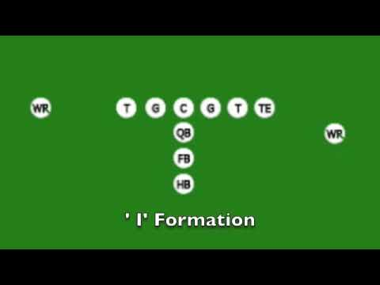
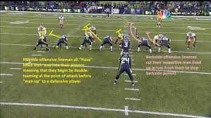

To start out the play the team must line up on the line of scrimmage. You have to have at least seven players on the line of scrimmage. All the players but one must be set when the ball is snapped. One of the backfield players may be "in motion" at the time of the snap.
Each offensive play begins when the center snaps the ball to the quarterback.
An important part of any offensive play is blocking. This is where offensive players get in the way of defensive players to prevent them from tackling the player with the ball. Blockers may not hold onto defensive players making this a difficult task.
In the NFL blocking schemes are complex. Players have specific assignments on each play. The full back may be responsible for blocking the middle linebacker to the left. The right guard may pull and block the left defensive end to the right. It looks like a mess on TV, but each player has a job to do. Even the receivers have blocking responsibilities on running plays. A good block by a receiver on a cornerback can make the difference in scoring a touchdown.
On running plays the quarterback may run with the ball or hand it off to a running back. On rare occasions a receiver may sprint through the backfield and receive the ball for a running play.
Up the middle - Running plays may be designed to go through a hole created in the defensive line. In this case the running back will try to dart through the hole when it opens up. Sometimes he may follow the fullback through the hole where the fullback is to block the linebacker out of the way.
Sweep - The sweep running play is designed to try and run around the outside of the defensive line.
Draw - A draw running play is when the quarterback moves back as if to pass the ball and then hands the ball off to a running back.
In a passing play the quarterback drops back and throws the ball to an eligible receiver. Typically there is a primary receiver for a play, but if that is covered, the quarterback will look to other receivers. Players that catch the ball include wide receivers, slot receivers, tight ends, and running backs.
Down the field - Longer passes down the field where the receiver runs fast routes such as go, fade, and post routes. The quarterback needs more time from his offensive line for this play to develop.
Short pass - Short passes don't gain as much initial yardage, but are very helpful when the defense blitzes or the offensive line is having trouble blocking. Typical short pass routes include the slant, hook, and the out.
Fade - The fade route is often run when the offense is close to the goal line. A big tall receiver will run to the corner of the end zone and the quarterback will throw the ball high in the air. The hope is that the tall receiver can out jump the cornerback for the ball.
Screen Pass - A screen pass is a short pass in the backfield. Typically the offensive linemen will let the defensive linemen get by them. Then the quarterback will toss the ball just over the defensive linemen to a running back. Now the offensive linemen can move down the field and block the linebackers for the running back.
Play Action
Play action is where the quarterback fakes a handoff for a run and then passes the ball. This is very effective when the team has had success running. The fake will cause the linebackers and safeties to "bite" on the run and move towards the line of scrimmage. This can give the receivers an advantage in getting open for the pass.
Ethan
Hancock High School
Exploring Computer Science Pilot Course - 2nd Block
Updated: May 2018
URL: efinleyabc.github.io/football4
{kind=link}
To start out the play the team must line up on the line of scrimmage. You have to have at least seven players on the line of scrimmage. All the players but one must be set when the ball is snapped. One of the backfield players may be "in motion" at the time of the snap. Each offensive play begins when the center snaps the ball to the quarterback.
An important part of any offensive play is blocking. This is where offensive players get in the way of defensive players to prevent them from tackling the player with the ball. Blockers may not hold onto defensive players making this a difficult task. In the NFL blocking schemes are complex. Players have specific assignments on each play. The full back may be responsible for blocking the middle linebacker to the left. The right guard may pull and block the left defensive end to the right. It looks like a mess on TV, but each player has a job to do. Even the receivers have blocking responsibilities on running plays. A good block by a receiver on a cornerback can make the difference in scoring a touchdown.
On running plays the quarterback may run with the ball or hand it off to a running back. On rare occasions a receiver may sprint through the backfield and receive the ball for a running play. Up the middle - Running plays may be designed to go through a hole created in the defensive line. In this case the running back will try to dart through the hole when it opens up. Sometimes he may follow the fullback through the hole where the fullback is to block the linebacker out of the way. Sweep - The sweep running play is designed to try and run around the outside of the defensive line. Draw - A draw running play is when the quarterback moves back as if to pass the ball and then hands the ball off to a running back.
In a passing play the quarterback drops back and throws the ball to an eligible receiver. Typically there is a primary receiver for a play, but if that is covered, the quarterback will look to other receivers. Players that catch the ball include wide receivers, slot receivers, tight ends, and running backs. Down the field - Longer passes down the field where the receiver runs fast routes such as go, fade, and post routes. The quarterback needs more time from his offensive line for this play to develop. Short pass - Short passes don't gain as much initial yardage, but are very helpful when the defense blitzes or the offensive line is having trouble blocking. Typical short pass routes include the slant, hook, and the out. Fade - The fade route is often run when the offense is close to the goal line. A big tall receiver will run to the corner of the end zone and the quarterback will throw the ball high in the air. The hope is that the tall receiver can out jump the cornerback for the ball. Screen Pass - A screen pass is a short pass in the backfield. Typically the offensive linemen will let the defensive linemen get by them. Then the quarterback will toss the ball just over the defensive linemen to a running back. Now the offensive linemen can move down the field and block the linebackers for the running back. Play Action Play action is where the quarterback fakes a handoff for a run and then passes the ball. This is very effective when the team has had success running. The fake will cause the linebackers and safeties to "bite" on the run and move towards the line of scrimmage. This can give the receivers an advantage in getting open for the pass.
Hancock High School
Exploring Computer Science Pilot Course - 2nd Block
Updated: May 2018
URL: efinleyabc.github.io/football4